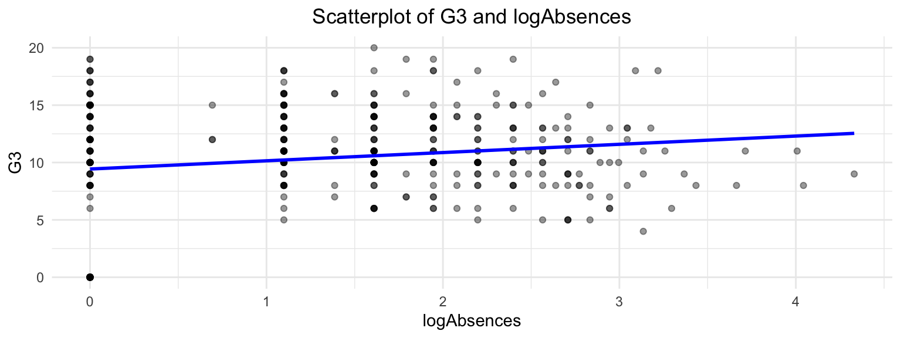
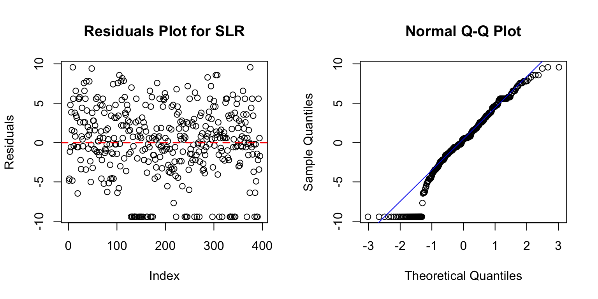
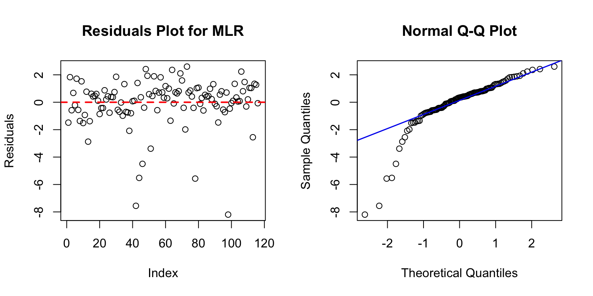

| Variable | Description |
|---|---|
| PStatus | Parent’s cohabitation status (T - living together or A - apart) |
| Mjob | Mother’s job, civil services, at home or other |
| Fjob | Father’s job, civil services, at home or other |
| Address | Student’s home address type (U - urban or R - rural) |
| Reason | Reason to choose this school |
| Age | Student’s age |
| Study_time | Weekly study time: 1 - <2 hours, 2 - 2 to 5 hours, 3 - 5 to 10 hours, or 4 - >10 hours |
| Family_rel | Quality of family relationships, from 1 - very bad to 5 - excellent |
| Walc | Weekend alcohol consumption, from 1 - very low to 5 - very high |
| Health | Current health status, from 1 - very bad to 5 - very good |
| Absences | Number of school absences |
| G1 | First term grade |
| G2 | Second term grade |
| G3(Response) | Final term grade |
Project Summary
1 Introduction and Data Description
Our project aims to predict students’ performances in mathematics in Portugal using the “Student Performance” dataset from the UCI Machine Learning Repository: https://archive.ics.uci.edu/dataset/320/student+performance. This dataset includes 395 students’ grades and various other attributes from two schools in Portugal: Gabriel Pereira or Mousinho da Silveira. We have selected 13 attributes that we considered the most relevant for predicting the final term mathematics performance \(G3\). Here are the descriptions of each variables.
Now, we are going to apply several models to our data.
2 Simple Linear Model
The relationship between the amount of absences and the G3(final quarter grade) should be linear.
Each student’s amount of absences and \(G3\) should be independent of another’s.
The variance of residuals should be consistent across all levels of absences.
The residuals of the model should approximately follow a normal distribution.
Since only one predictor (absences) is considered in relation to \(G3\) in our model, multicollinearity is not an issue.
Our is:
\[\large G3 \sim \beta_0 + \beta_1 \text{logAbsences}_i + \varepsilon_i\] \(\beta_0\): The intercept term, it represents the value of G3 when log(Absences) = 0 \(\beta_1\): The coefficient of log(Absences) \(\varepsilon\): The error term represents the difference between the observed value of \(G3\) and the value predicted by the regression line.
First, let us exhibit the scatterplot of G3 and logAbsences.

Call:
lm(formula = G3 ~ logAbsences, data = mathdata)
Residuals:
Min 1Q Median 3Q Max
-9.4309 -2.2200 0.4132 3.1235 9.5691
Coefficients:
Estimate Std. Error t value Pr(>|t|)
(Intercept) 9.4309 0.3730 25.283 < 2e-16 ***
logAbsences 0.7182 0.2156 3.331 0.000948 ***
---
Signif. codes: 0 '***' 0.001 '**' 0.01 '*' 0.05 '.' 0.1 ' ' 1
Residual standard error: 4.524 on 393 degrees of freedom
Multiple R-squared: 0.02745, Adjusted R-squared: 0.02498
F-statistic: 11.09 on 1 and 393 DF, p-value: 0.000948From the p-value, we can see that both intercept and logAbsences exhibit significance for prediction, and the \(R^2\) is not so high, we may assume that one predictor is not enough for our model to predict the G3

We can see that the residuals indeed destributed alike Gaussian, but there are still some weird behaviors in the QQ plot, and verifies our thought that one predictor logAbsences may not be enough to predict the G3. Hence, we will move forward to the Multiple Linear Regression Model and set up more predictors for our dataset.
3 Multiple Linear Model
Starting from this part, we are going to separate our dataset into 70% of training and 30% of testing.
First of all, we set up a whole model and then we use stepwise selection to crawl the model space, adding or removing variables one at a time until reaching a stoppping point, depending on which is better. Stepwise methods are combinations of forward selection and backward elimination, it can start at anywhere, at each iteration, either a forward or backward step can be taken. And we found the significant predictors depending on their p-values presented below.
Call:
lm(formula = G3 ~ ., data = train_data)
Residuals:
Min 1Q Median 3Q Max
-8.3894 -0.6469 0.2466 1.1220 3.7178
Coefficients:
Estimate Std. Error t value Pr(>|t|)
(Intercept) 0.8243587 1.8307158 0.450 0.65288
Age -0.2573852 0.0952697 -2.702 0.00736 **
Study_time2 -0.2402154 0.2710217 -0.886 0.37626
Study_time3 -0.1413436 0.3743374 -0.378 0.70605
Study_time4 -0.6437278 0.4781429 -1.346 0.17938
Family_rel2 0.3189716 0.9517935 0.335 0.73780
Family_rel3 0.9124278 0.8164941 1.117 0.26482
Family_rel4 1.0587478 0.7883582 1.343 0.18045
Family_rel5 1.6731527 0.8028273 2.084 0.03813 *
Walc2 -0.3259161 0.3106404 -1.049 0.29508
Walc3 0.0449286 0.3144706 0.143 0.88650
Walc4 0.0005311 0.3766008 0.001 0.99888
Walc5 0.1503265 0.5040269 0.298 0.76575
Health2 -0.5259303 0.4813733 -1.093 0.27560
Health3 0.2370666 0.4150752 0.571 0.56840
Health4 -0.1859810 0.4432203 -0.420 0.67512
Health5 0.1809272 0.3809675 0.475 0.63525
G1 0.2015680 0.0675709 2.983 0.00313 **
G2 0.9229364 0.0586557 15.735 < 2e-16 ***
logAbsences 0.6273482 0.1094159 5.734 2.73e-08 ***
---
Signif. codes: 0 '***' 0.001 '**' 0.01 '*' 0.05 '.' 0.1 ' ' 1
Residual standard error: 1.845 on 259 degrees of freedom
Multiple R-squared: 0.8555, Adjusted R-squared: 0.8449
F-statistic: 80.69 on 19 and 259 DF, p-value: < 2.2e-16New model : \[\text{G3}_i \sim \beta_1 \text{Age}_i + \beta_2 \mathbf{1}\{\text{Family\_rel}_i = 5\} + \beta_3 \text{G1}_i + \beta_4 \text{G2}_i + \beta_5 \log(\text{Absences}_i) + \varepsilon_i\] Interesting finding, in the simple linear regression step, we found that intercept was significant and then here, intercept was not significant, which is an surprising finding that deserves further investigation.
\[\text{G3_tran}_i \sim \beta_1 \text{Age}_i+ \beta_2 \text{G1}_i + \beta_3 \text{G2}_i + \beta_4 \log(\text{Absences}_i) + \varepsilon_i\]
Apply the model to our testing data and see the residuals.

The more predictors we use, the higher chance we might encounter multi-collinearity within our predictors, and we can see from the ggpairs plot, it has shown that G1, G2, and G3 are highly correlated with each other, as demonstrated by the GGpairs plot. To address collinearity, we are going to employ shrinkage methods such as LASSO and Ridge Regression. Shrinkage techniques build on the principles from the mathematical optimization models of multiple linear regression by introducing a penalizing term to the loss function. These methods are typically used to address collinearity and aid in variable selection.
4 Shrinkage Method
$Ridge_Lambda
[1] 0.4234572
$LASSO_Lambda
[1] 0.09337785| Term | Ridge | LASSO |
|---|---|---|
| (Intercept) | 2.3438867 | 1.1115948 |
| Age | -0.2728467 | -0.1902027 |
| Study_time2 | -0.1774214 | 0.0000000 |
| Study_time3 | -0.0641157 | 0.0000000 |
| Study_time4 | -0.4960853 | -0.0804816 |
| Family_rel2 | -0.5399116 | -0.2885848 |
| Family_rel3 | 0.0889920 | 0.0000000 |
| Family_rel4 | 0.1521927 | 0.0000000 |
| Family_rel5 | 0.7330677 | 0.4586829 |
| Walc2 | -0.4400705 | -0.1391771 |
| Walc3 | 0.0925369 | 0.0000000 |
| Walc4 | 0.0412947 | 0.0000000 |
| Walc5 | 0.1554768 | 0.0000000 |
| Health2 | -0.5149864 | -0.3181407 |
| Health3 | 0.1148550 | 0.0000000 |
| Health4 | -0.2416216 | -0.0306104 |
| Health5 | 0.1234786 | 0.0502768 |
| G1 | 0.3515291 | 0.1719111 |
| G2 | 0.7396923 | 0.9188512 |
| logAbsences | 0.5850484 | 0.5159241 |
By using them, we can see that some categorical variables are indeed important. Ridge Regression includes all predictors, shrinking their coefficients towards zero without eliminating them, resulting in smaller coefficients compared to MLR due to regularization. LASSO, on the other hand, performs more strict variable selection by shrinking the coefficients of insignificant predictors to \(0\), which is why it includes fewer predictors. Notably, both models include the intercept, which we previously ruled as insignificant in the MLR model. Despite these differences, we observe that the coefficients for Age, logAbsences, G1, and G2 are quite close to the MLR models, suggesting that these variables are consistently important predictors of G3. Now, we can apply these models for prediction and test which one provides better prediction accuracy.
| Model | R2 | RMSE | MAE |
|---|---|---|---|
| MLR | 0.8397116 | 1.732140 | 1.127933 |
| Ridge | 0.8334957 | 1.765406 | 1.252630 |
| LASSO | 0.8439452 | 1.709112 | 1.093087 |
5 Inovation
The methods we chose, the Box-Cox Transformation and the Bootstrap Method, were highly effective in improving our regression model’s accuracy and reliability.
The data’s non-linearity and heteroscedasticity were effectively addressed by the Box-Cox Transformation, which stabilized variance and improved the residuals’ normal distribution. This is demonstrated by the Q-Q plot’s more precise matching of residuals with the diagonal line and the Residuals vs. Fitted plot’s more randomly distributed residuals around zero.
Additionally, the Bootstrap Method validated the stability and reliability of our model’s coefficients by repeatedly resampling the data, which confirmed that the original coefficients were close to the bootstrap means and fell within the narrow bootstrap confidence intervals. The results indicate the great reliability and stability of our estimations, showing the accuracy and not a significant bias in the model’s coefficients.
Overall, these methods provided significant insight into the variables that affect student performance in the final and ensured that our model’s predictions were accurate and reliable.
6 Practical and Inferential Insights
This data analysis provides valuable insights for improving student outcomes and tailoring support strategies within the education system. By understanding the relationship between absences and grades, we can draw meaningful conclusions and make predictions about student performance.
School Administration and Teachers:
The results help school administrators identify trends and areas of concern, enabling the development of policies and interventions to reduce absenteeism and boost academic achievement. Teachers can adjust instruction strategies, use flexible attendance policies, and provide additional resources to support students, using data-driven insights to target the most impactful factors.
Parents:
Parents gain a clearer understanding of how attendance affects academic performance, allowing them to encourage consistent attendance and address barriers. This knowledge fosters better collaboration with teachers and counselors to support their children’s educational journey.
7 Conclusion
In general, we found that these three models have very similar metrics. Before conducting this analysis, we expected LASSO or Ridge to outperform MLR significantly due to their broader consideration of predictors. While all three models perform well, LASSO has a slight advantage in terms of accuracy. Ridge regression provides stability by addressing collinearity, though with a minor reduction in prediction accuracy.
However, the MLR model is still regarded as a suitable model for analysis as it has fewer number of variables indicate less complexity, which would be helpful to prevent overfitting and improve generalization in our model, the only cost is a little prediction accuracy.
While our analysis provides intriguing insights into the relationship between various attributes and students’ performances, the current sample’s limitations warrant caution. Our goal is to predict mathematics per- formance across Portugal, yet our sample includes only about 400 students from 2 schools. In the 2021/22 school year, 963 schools provided upper secondary education to 397,100 students across Portugal (Education Statistics 2021/2022, DGEEC/DSEE). This limited sample size may not fully capture the diverse factors influencing student performance across different regions and demographics.
A more representative sample is crucial for enhancing the robustness and reliability of our models and predictions. Including a larger and more diverse group of students would ensure our analysis accounts for varying socio-economic backgrounds, educational resources, and regional differences. Moreover, a broader sample would enable us to identify new significant predictors and filter down existing ones more accurately.
Thoughts
As a concluding thought, our group found this topic particularly compelling. In today’s competitive educa- tional landscape, grades have become increasingly important to many people. Parents often face challenges in supporting their children’s education while striving to provide the best possible guidance. This study is especially meaningful as it can serve as an educational guide for new parents who are deeply invested in their children’s academic success. By understanding the factors that influence student performance, they can better support and encourage their children’s educational journeys. Our work with regression techniques has inspired us to apply them to other important datasets. Beyond educational data, we could analyze world poverty and famine rates to uncover insights that inform policy decisions. Understanding the factors behind these issues will enhance our skills and help us make a meaningful impact. By extending our use of regression techniques, we aim to contribute positively to addressing global challenges.